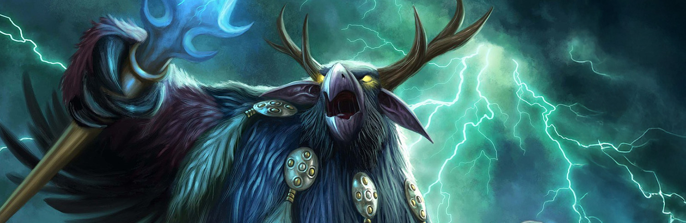

Boomie Build!
My build is a balance druid, or boomie for short. I play this class because I love the fantasy of being a druid and the versatility of being able to heal, tank, or dps. I also love the fantasy of being able to shapeshift into different forms and the utility that comes with it.
My build focuses on maximizing my damage output while still being able to provide utility to my team. I use a mix of talents that allow me to do more damage while also providing utility such as crowd control and survivability.
Overall, I love playing my boomie and I think it's a great class for anyone who loves the fantasy of being a druid and wants to have a versatile playstyle.